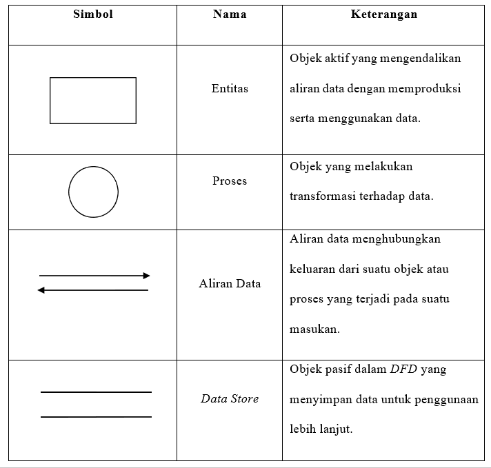
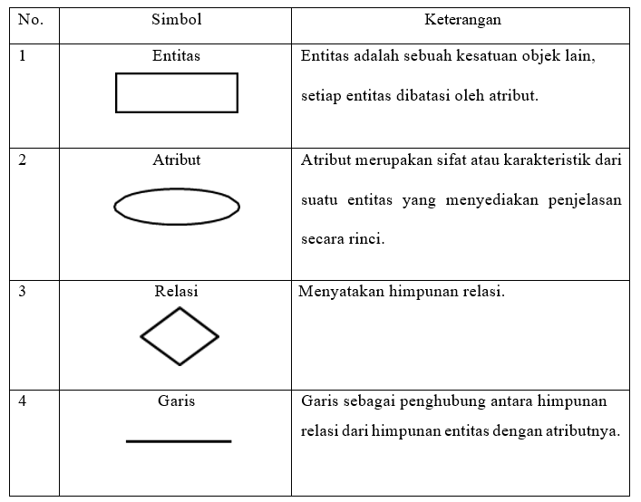

BAB I
PENDAHULUAN
1.1 Latar Belakang
Proses produksi erat kaitannya dengan sistem inventory (persediaan), yaitu untuk menjamin lancarnya proses produksi. Persediaan adalah bahan-bahan, bagian yang disediakan, dan bahan-bahan dalam proses yang terdapat dalam perusahaan untuk proses produksi, serta barang-barang jadi atau produk yang disediakan untuk memenuhi permintaan dari konsumen atau pelanggan. Kegiatan produksi tidak hanya berorientasi pada produk yang dihasilkan, tetapi bagaimana pencatatan barang sesuai dengan produksi itu dan dapat berjalan dengan baik. Pengolahan data dan informasi secara cepat, tepat dan efisien adalah hal penting yang dibutuhkan bagi setiap perusahaan atau instansi.
PT. Konveksi Jaya merupakan perusahaan yang bergerak pada bidang sandang di kota Yogyakarta yang memproduksi pakaian berupa kaos polos. Permasalahan yang ditemui yaitu pada proses pencatatan laporan stock barang serta barang masuk dan keluar. Rekap dokumen pencatatan dilakukan ketika saat ada stock barang, barang masuk, dan pada saat barang keluar. Setiap bulan dilakukan rekap dokumen untuk mengontrol sirkulasi yang terjadi pada gudang, yang bertanggung jawab mengontrol persediaan barang pada gudang yaitu petugas gudang. Pada proses pencatatan stok barang, baik itu barang masuk dan barang keluar masih menggunakan cara manual dengan nota, buku besar dan hanya dimasukkan di software Ms. Excel ketika laporan akhir bulan. Proses manual ini mengakibatkan terjadinya kekeliruan dan kesalahan dalam pencatatan sehingga menyulitkan petugas gudang dan admin dalam mengelola data produk barang serta melakukan pencatatan produk barang masuk ataupun keluar dan memberikan laporan kepada pemilik dengan hasil laporan yang kurang akurat dan terperinci.
Berdasarkan dari permasalahan yang ada, maka dibuat suatu aplikasi sistem informasi persediaan barang berbasis web untuk meminimal kesalahan human error. Aplikasi ini sebagai media untuk memudahkan petugas gudang saat mencatat persediaan barang serta admin dalam mengelola. Data yang diolah yaitu data barang yang meliputi nama barang, jenis barang, satuan barang, data supplier, data barang masuk serta keluar. Sistem dibangun berbasis web dengan HTML dan CSS dengan Framework Bootstrap serta menggunakan bahasa pemrograman PHP dengan Framework CodeIgniter dan JavaScript, MySQL sebagai database tempat penyimpanan, dan Apache sebagai web server.
1.2 Rumusan Masalah
Berdasarkan latar belakang masalah di atas, maka permasalahan yang dapat diambil adalah Bagaimana merancang dan membangun sebuah Sistem Informasi Persediaan Barang Berbasis Web sehingga petugas gudang dan admin dapat mencatat serta mengelola data produk kaos dengan mudah dan pemilik dapat mengakses serta melihat laporan barang dengan lebih mudah, akurat dan terperinci.
1.3 Batasan Masalah
Batasan masalah di dalam sistem ini adalah :
1. Pembuatan Sistem Informasi yang dapat mengelola Persediaan Produk Barang yang meliputi nama barang, jenis barang, satuan barang, jumlah stock barang, informasi supplier, informasi keluarnya barang, dan informasi masuknya barang serta laporan produk barang.
2. Hak Akses pada Sistem ini yaitu Pemilik, Admin dan Petugas Gudang
3. Aplikasi yang dibangun berbasis web dengan HTML dan CSS dengan Framework Bootstrap serta menggunakan bahasa pemrograman PHP dengan Framework CodeIgniter dan JavaScript, MySQL sebagai database tempat penyimpanan, dan Apache sebagai web server.
1.4 Tujuan
Adapun tujuan dari penulisan ini adalah sebagai berikut:
1. Mengimplementasikan Sistem Informasi Persediaan Barang Berbasis Web.
2. Menghasilkan informasi berupa data stok barang, pengeluaran barang dan pemasukan barang serta laporan yang dapat membantu pemilik dalam mengambil keputusan.
1.5 Manfaat
Manfaat dari penulisan laporan praktik ini adalah sebagai berikut :
1. Dapat memberikan informasi mengenai proses keluar masuk barang.
2. Mempermudah admin dan petugas dalam mengelola data-data persediaan produk barang.
3. Mendapatkan hasil informasi laporan produk barang yang akurat .
4. Serta dapat mengakses informasi dan laporan lebih cepat dan mudah.
BAB II
LANDASAN TEORI
2.1 Pengertian Perancangan
Perancangan berarti suatu sarana untuk mentransformasikan persepsi-persepsi mengenai kondisi lingkungan kedalam rencana yang berarti dan dapat dilaksanakan dengan teratur. Perancangan secara umum bertujuan untuk memberikan gambaran dari sistem yang dibentuk, perancangan dan pembuatan sketsa dari beberapa elemen yang terpisah ke dalam satu kesatuan yang utuh dan lengkap kepada programmer atau user (pengguna).
2.2 Sistem Informasi
Sistem Informasi merupakan suatu rangkaian informasi yang di dalamnya terdapat bagian – bagian yang berhubungan dan saling ketergantungan satu sama lain serta mencakup sejumlah komponen (manusia, komputer, teknologi informasi dan porosedur kerja), ada sesuatu yang diproses (data menjadi informasi) dan dimaksudkan untuk mencapai suatu sasaran atau tujuan tertentu.
Sistem informasi dapat didefinisikan sebagai serangkaian komponen yang saling berhubungan yang mengumpulkan (atau mendapatkan), memproses, menyimpan, dan mendistribusikan informasi yang mendukung pengambilan keputusan dan pengawasan di dalam sebuah organisasi (Laudon dan Jane P. Laudon, 2014:16).
2.3 Persediaan Barang
Richard berpendapat bahwa pengertian persediaan barang adalah material, dapat berupa bahan baku, barang setengah jadi, atau produk jadi yag disimpan dalam suatu tempat penyimpanan untuk menunggu proses berikutnya atau untuk dijual pada masa mendatang. Sedangkan menurut Zaki persediaan barang itu mempunyai pengertian “Persediaan barang yaitu menunjukan barang-barang yang dimiliki oleh suatu perusahaan untuk dijual kembali atau digunakan untuk keperluan perusahaan tersebut”.
2.4 Metode Scrum
Metode Scrum adalah suatu metodologi atau kerangka kerja yang terstruktur untuk mendukung pengembangan produk yang kompleks. Dalam pengembangan scrum terdiri dari satu tim yang terbagi menjadi tiga peran scrum, yaitu product owner, master scrum dan development team. Setiap komponen dalam kerangka melayani tujuan tertentu dan sangat penting untuk kesuksesan penggunaan scrum. Berikut merupakan tahap – tahap dalam menggunakan metode scrum yang dijelaskan pada gambar :
Gambar Tahapan Scrum
- Product Backlog
Pada tahap product backlog dilakukan pengelompokan kebutuhan client dan mengetahui tujuan pembuatan sistem. Selain itu juga menjelaskan mengenai kendala atau permasalah yang dihadapi perusahaan atau instansi saat ini. Secara sederhana, tahapan ini berisi daftar apa saja yang harus tim lakukan sesuai dengan skala prioritas perusahaan. - Sprint Planning
Pada tahapan ini dilakukan pengerjaan sesuai dengan product backlog yang sudah dilakukan analisa kebutuhan. Sprint Planning merupakan perencanaan untuk pengerjaan product backlog, yang berguna untuk menentukan bagian-bagian pekerjaan. - Sprint Backlog
Sprint Backlog merupakan tahap untuk membagi pekerjaan dan menargerkan durasi pengerjaan dari tiap fitur product backlog. - Sprint Execution
Setelah cara dan batas waktu pengerjaan ditentukan dalam sprint planning, tahapan metode scrum selanjutnya adalah melakukan sprint. Sprint Execution merupakan proses untuk mengerjakan seluruh daftar pekerjaan. Proses ini dilakukan melalui kegiatan daily scrum. - Daily Scrum
Daily Scrum adalah proses rapat yang dilakukan development team untuk mengevaluasi progress atau hasil pekerjaan dimana tim berkumpul dan bekerja untuk memastikan perkembangan produk terus berjalan. Dalam proses ini juga dikenal adanya peran scrum master.
Umumnya, tim yang terlibat dalam proses scrum adalah sekelompok orang. Di antara orang-orang tersebut, ada perwakilan yang berperan sebagai scrum master. Tugas scrum master adalah untuk membantu tim agar tetap fokus. - Sprint Review
Sprint Review merupakan kegiatan untuk menginspeksi dan mengadaptasikan produk yang sedang pada tahap pembangunan. - Sprint Retrospective
Sprint Retrospective merupakan kegiatan untuk menginspeksi dan mengadaptasikan produk yang telah selesai dibangun.
2.5 Data Flow Diagram (DFD)
Data flow diagram adalah suatu grafik yang menjelaskan sebuah sistem dengan menggunakan bentuk-bentuk dan simbol-simbol untuk menggambarkan aliran data dari proses-proses yang saling berhubungan. Data flow diagram ini adalah salah satu alat pembuatan model yang sering digunakan, khususnya bila fungsi-fungsi sistem merupakan bagian yang lebih penting dan kompleks dari pada data yang dimanipulasi oleh sistem.
Dengan kata lain, data flow diagram adalah alat pembuatan model yang memberikan penekanan hanya pada fungsi sistem. Data flow diagram ini merupakan alat perancangan sistem yang berorientasi pada alur data dengan konsep dekomposisi dapat digunakan untuk penggambaran analisa maupun rancangan sistem yang mudah dikomunikasikan oleh profesional sistem kepada pemakai maupun pembuat program. (Adelia, 2011).
Tabel Simbol Data Flow Diagram (DFD)
2.6 Entity Relationship Diagram (ERD)
Menurut Adelia (2011), Entity Relationship Diagram (ERD) yaitu model konseptual yang menjabarkan hubungan antar penyimpanan data dan hubungan data. Pada Entity Relationship Diagram (ERD) terdapat simbol-simbol dengan himpunan relasi yang masing-masing memiliki atribut untuk menjelaskan suatu relasi secara keseluruhan atau melakukan aktivitas permodelan data.
Tabel Simbol Entity Relationship Diagram (ERD)
2.7 Database Management System (DBMS)
Menurut Firdayanti, Meriza (2012), DBMS adalah perangkat lunak untuk mendefinisikan, menciptakan, mengelola dan mengendalikan pengaksesan basis data. Tujuan utama DBMS adalah menyediakan langkah yang nyaman dan efisien untuk penyimpanan dan pengambilan data dari basis data. DBMS berperan memberi abstraksi data tingkat tinggi ke pemakai.
2.8 MySQL
Database digunakan untuk penyimpanan data. Demikian pula dengan MySQL. Kita akan memanggil data pada MySQL melalui PHP, kemudian hasilnya dikirim ke computer klien untuk ditampilkan pada browser. Data pada MySQL terdiri dari tabel-tabel. Setiap tabel mempunyai kolom, baris, serta record untuk menyimpan data. Misalnya kita mempunyai sebuah database dengan nama member dan salah satu tabelnya bernama anggota (Sutisna, 2007).
MySQL merupakan turunan dari salah satu konsep utama dalam basis data sejak lama, yaitu SQL (Structured Query Language). SQL adalah sebuah konsep pengoperasian basis data terutama dapat dikerjakan dengan mudah dan otomatis. Kepopuleran MySQL dimungkinkan karena kemudahannya untuk digunakan, cepat secara kinerja query, dan mencukupi untuk kebutuhan database perusahaan - perusahaan skala menengah kecil. MySQL merupakan database yang digunakan oleh situs - situs terkemuka di Internet untuk menyimpan datanya. Software database MySQL kini dilepas sebagai software manajemen database yang open source, sebelumnya merupakan software database yang shareware. Shareware adalah suatu software yang dapat didistribusikan secara bebas untuk keperluan penggunaan secara pribadi, tetapi jika digunakan secara komersial maka pemakai harus mempunyai lisensi dari pembuatnya.
2.9 Hypertext Preprocessor (PHP)
PHP adalah bahasa pemrograman web atau scripting language yang dijalankan diserver. PHP dibuat pertama kali oleh Rasmus Lerdorf, yang pada awalnya dibuat untuk menghitung jumlah pengunjung pada homepagenya. Pada waktu itu PHP bernama FI (Form Interpreter). Pada saat tersebut PHP adalah sekumpulan script yang digunakan untuk mengolah data form dari web. Perkembangan selanjutnya adalah Rasmus melepaskan kode sumber tersebut dan menamakannya PHP/FI, pada saat tersebut kepanjangan dari PHP/FI adalah Personal Home Page/Form Interpreter. Pelepasan kode sumber ini menjadi open source, maka banyak programmer yang tertarik untuk ikut mengembangkan PHP.
PHP adalah sebuah pemrograman Bahasa scripst server-side yang dalam pengembangan web penggunanya disisipkan ke dalam dokumen HTML. Pengguna PHP memungkinkan pembuat sebuah web yang bersifat dinamis sehingga proses maintenance situs web tersebut lebih mudah dan efisien.
PHP Dapat digunakan oleh semua sistem operasi seperti, Linux, Unix, Microsoft Windows, MAC OS, RISC OS. Selain itu PHP mendukung berbagai web server, seperti Apachar, Microsoft Internet Information.
Beberapa kelebihan yang dimiliki PHP dibandingkan dengan Bahasa pemrograman lain adalah sebagai berikut:
a. Dalam penggunaanya, PHP tidak melakukan proses kompilasi.
b. Lebih mudah dari sisi pengembangan karena banyaknya milis-milis dan developer yang siap membantu.
c. Terdapat banyak referensi sehingga mudah untuk dipahami.
d. Dapat dijalankan secara runtime dengan menggunakan console dan juga dapat menjalankan perintah-perintah sistem.
BAB III
HASIL DAN PEMBAHASAN
3.1 Pengumpulan Kebutuhan
Penerapan metode Scrum dalam membuat aplikasi ini diawali dengan tahap perencanaan pengumpulan kebutuhan sebelum dimasukkan ke product backlog, pada langkah ini pengembang dan klien membuat rencana tentang kebutuhan dari perangkat lunak yang akan dibuat dengan menggunakan teknik pengumpulan data ini dilakukan beberapa tahapan, adapun penjelasan dan tahapan dari pengumpulan data dijelaskan sebagai berikut :
- A. Observasi
Pada tahapan ini, dilakukan observasi secara langsung pada PT Konveksi Jaya bagaimana selama ini petugas gudang melakukan pencatatan data barang, dan melihat admin mengelola data persediaan barang serta beberapa fenomena yang ada pada objek penelitian, hasilnya adalah penulis menemukan permasalahan permasalahan yang sudah penulis tulis sebelumnya, dan dari observasi ini pula penulis menyimpulkan bahwa perusahaan membutuhkan sebuah sistem informasi persediaan barang berbasis web untuk menyelesaikan permasalahan tersebut.
- B. Wawancara
Setelah menemukan permasalahan yang ada pada tahap observasi berikutnya penulis melakukan wawancara kepada petugas gudang, admin ataupun pimpinan dari perusahan, hal ini dilakukan untuk mencari solusi dan mendengarkan kebutuhan dari perusahaan terkait sistem informasi yang akan dibuat.
- C. Studi Pustaka
Metode Studi Pustaka Metode pengumpulan data dalam studi pustaka, penulis melakukan studi dari beberapa buku, e-book, e-journal dan modul pembelajaran yang terkaitan erat dengan penulisan perancangan sistem ini.
3.1.1 Kebutuhan Fungsional
Kebutuhan sistem mendefinisikan hal-hal yang dibutuhkan oleh sistem yang akan dibangun antara lain :
1. Kemampuan untuk dapat mengelola data user atau akun, data supplier, data master barang yang meliputi data barang, jenis barang, satuan barang, data transakasi yaitu barang masuk serta barang keluar, dan data laporan barang masuk dan keluar, pada setiap user yang memiliki level akses yang berbeda-beda.
2. Kemampuan untuk menampilkan seluruh rincian barang yang tersedia pada sistem persediaan barang dan mencari data barang termasuk transaksi data barang masuk serta keluar.
3. Halaman beranda, menu halaman untuk mengelola data supplier, master barang, transakasi, laporan.
4. Cetak laporan barang masuk dan keluar.
3.1.2 Kebutuhan Non - Fungsional
Perangkat lunak yang digunakan untuk membangun aplikasi :
1. Tools & Sofware : Xampp, VScode, Framework Bootstrap, CodeIgniter, dan Adobe XD.
2. Sistem Operasi : Windows 10 64bit
3.1.3 Analisis Pengguna
Berikut analisa kebutuhan pengguna yaitu:
- Admin
a. Admin dapat mengelola data user atau akun.
b. Admin dapat mengelola data supplier.
c. Admin dapat mengelola data master barang yang meliputi satuan barang, jenis barang, dan data barang.
d. Admin dapat mengelola data transaksi yang meliputi data barang masuk dan data barang keluar.
e. Admin dapat melihat data laporan barang masuk dan keluar serta dapat mencetak kedalam bentuk file PDF.
- Pemilik / Manager
Bagian Pemilik dapat melihat laporan data barang masuk dan keluar serta dapat mencetak kedalam bentuk file PDF. - Petugas Gudang / Karyawan
a. Bagian Petugas Gudang dapat mengelola data supplier.
b. Bagian Petugas Gudang dapat mengelola data master barang yang meliputi satuan barang, jenis barang, dan data barang.
c. Bagian Petugas Gudang dapat mengelola data transaksi yang meliputi data barang masuk dan data barang keluar.
3.1.4 Analisa Sistem
Berdasarkan identifikasi syarat-syarat dan kebutuhan sebelumnya, untuk membuat aplikasi web yang diminta pihak PT Konveksi Jaya maka berikut ini poin-poin hasil analisis mengenai sistem yang akan dibuat:
1. Data-data Persediaan barang seperti data supplier, data barang, jenis, satuan, barang masuk dan keluar disajikan dalam bentuk tabel untuk setiap jenis pada menu serta dilengkapi dengan fitur CRUD, sehingga untuk tampilan antarmuka layar akan terlihat sangat simple dan efisien.
2. Informasi Pada menu persediaan barang meliputi supplier, master barang, transaksi, laporan.
3. Aplikasi web memiliki sistem keamanan yaitu hak akses level pada setiap user.
3.2 Product Backlog
Pada tahap ini, ditentukan semua kebutuhan pengguna beserta skala prioritasnya. Prioritas menentukan fitur mana yang harus dikerjakan terlebih dahulu. Fitur-fitur yang akan dirancang pada sistem dituliskan pada tabel product backlog. Berikut ini merupakan daftar fitur yang akan dibuat dalam menentukan product backlog.
Tabel Product Backlog
| Fitur | Prioritas | Fungsi |
|---|---|---|
| Login | Tinggi | Login merupakan halaman awal bagi pengguna untuk dapat masuk kedalam Sistem Informasi Persediaan Barang, pada saat login terdapat 3 level hak akses user yang setiap level akses dan tampilan halaman berbeda. |
| Dashboard | Tinggi | Menampilkan beberapa menu untuk pengelolaan persediaan barang, jumlah data barang, total transaksi perbulan, transaksi barang, barang masuk serta keluar terakhir. |
| Menu Master Barang (Data barang, satuan, jenis, supplier, user) |
Sangat Tinggi | Fitur ini berfungsi melakukan aktivitas untuk mengelola data dari menambah mengubah dan menghapus serta informasi, data yang dikelola yaitu data barang, satuan, jenis, supplier dan user. |
| Menu Transaksi | Sangat Tinggi | Untuk mengelola data barang masuk dan keluar. |
| Menu Laporan | Sangat Tinggi | Untuk melihat laporan data barang masuk dan keluar dengan mencari datanya atau dengan tanggal. Serta dapat mencetak data laporan barang masuk dan keluar ke dalam pdf. |
3.3 Sprint Planning
Perencanaan pengerjaan product backlog dituliskan didalam tabel sprint planning. Berikut merupakan daftar sprint planning.
Tabel Sprint Planning
| Sprint | Product Backlog | Estimasi Waktu Kerja (Hari) |
|---|---|---|
| Sprint 1 | Login, Dashboard | 7 |
| Sprint 2 | Menu Master Barang | 10 |
| Sprint 3 | Menu Transaksi | 5 |
| Sprint 4 | Menu Laporan | 5 |
Perancangan sprint planning kali ini dibagi menjadi empat tahapan sprint. Masing-masing tahapan sprint direncanakan untuk dikerjakan selama 5-10 hari.
3.4 Sprint Backlog
Untuk mengerjakan sprint planning, masing-masing sprint dibagi menjadi beberapa tahapan pengerjaan dan gambaran waktu untuk penyelesaikan tiap pekerjaan. Berikut merupakan daftar sprint backlog.
Tabel Sprint Backlog
| Task | Task Status | Estimasi Waktu Kerja (Jam) |
|---|---|---|
| Login | ||
| Desain Sistem | Finised | 4 |
| Coding Fitur | Not Started | 7 |
| Pengujian | Not Started | 3 |
| Dashboard | ||
| Desain Sistem | Finised | 5 |
| Coding Fitur | Not Started | 8 |
| Pengujian | Not Started | 3 |
| Jumlah | 30 | |
Daftar diatas merupakan tahapan pengerjaan yang dirancang untuk sprint 1. Sprint 1 berisikan fitur Login dan Dashboard.
3.5 Sprint Execution
Sprint Execution merupakan tahap perancangan desain sistem, desain user interface sistem dan desain relasi database. Pada desain sistem terdapat Diagram Jenjang, Data Flow Diagram (DFD) yang mengambarkan desain sistem, dan Entity Relationship Diagram (ERD) yang berisikan rancangan database.
3.5.1 Diagram Jenjang
Diagram berjenjang merupakan bentuk sistem secara menyeluruh yang
tergambar dalam bentuk hierarki proses, diagram tersebut digambarkan pada seperti berikut :

3.5.2 Data Flow Diagram (DFD)
Data Flow Diagaram adalah suatu model logika data atau proses yang dibuat untuk menggambarkan dari mana asal data dan kemana tujuan data yang keluar dari sistem, dimana data disimpan, proses apa yang dihasilkan data tersebut dan interaksi antara data yang tersimpan dan proses yang dikenakan pada data tersebut.
A. DFD Level 0 (Diagram Konteks)
Diagram Konteks dari sistem informasi persediaan barang menggambarkan proses secara umum yang terjadi pada persediaan barang di PT Konveksi Jaya. Pada diagram konteks tersebut melibatkan 3 entity, yaitu admin, petugas gudang dan Pemilik . Dapat dilihat pada Gambar berikut :

B. DFD Level 1
Dari diagram contect dikembangkan DFD level 1 yang menggambarkan keseluruhan proses yang dapat dilakukan dalam sistem, dapat dilihat pada gambar berikut :

B. DFD Level 2
Diagram level satu dikembangkan lagi menjadi diagram level 2 ditunjukkan pada Gambar berikut:
- 1. DFD Level 2 Proses Pengelolaan Data Master

- 2. DFD Level 2 Proses Pengelolaan Data Master Barang
3.5.3 Entity Relationship Diagram (ERD)
Untuk memodelkan data maka dibuat diagram Entity Relation Diagram seperti yang ditunjukkan oleh Gambar berikut :
3.5.4 Desain Relasi Database
Desain Relasi Tampilan Database :

3.5.5 Desain Perancangan Tampilan User Interface (UI)
Berikut adalah tampilan user interface untuk desain sistem informasi persediaan barang berbasis web:
1. Desain Tampilan Halaman Login
Halaman login merupakan halaman yang digunakan untuk login ke sistem, pada saat login terdapat 3 level user yang setiap level akses dan tampilan halaman berbeda. Jika username dan password di ketik dengan benar maka akan masuk kedalam sistem.
2. Tampilan Halaman Admin
A. Desain Tampilan Halaman Home atau Dashboard Admin
Halaman Home atau Dashboard admin gudang merupakan halaman yang muncul ketika level user admin sukses masuk kedalam sistem. Halaman ini menampilkan menu dan informasi barang yang dibutuhkan level user admin, Berikut adalah halaman utama admin pada Gambar dibawah ini :

B. Desain Tampilan Halaman Supplier Admin
Halaman ini berfungsi mengelola data supplier. Berikut adalah halaman supplier admin pada Gambar dibawah ini :
C. Desain Tampilan Halaman Menu Master Barang Admin
Pada Menu Master Barang terdapat 3 Halaman yaitu Data Barang, Jenis Barang, dan Satuan Barang. Halaman tersebut untuk mengelola data-data barang produk kaos termasuk pada satuan barang dan jenis barang. Pada bagian halaman barang Ketika di klik satu produk barang maka akan menampilkan detail data barang. Berikut adalah 3 halaman menu master barang admin dan juga detail barang pada Gambar dibawah ini :
Desain Tampilan Halaman Menu Barang
.png)
Desain Tampilan Halaman Menu Jenis Barang
.png)
Desain Tampilan Halaman Menu Satuan Barang
.png)
Desain Tampilan Halaman Menu Barang - Detail Barang
Detail Barang.png)
D. Desain Tampilan Halaman Menu Transaksi Admin
Pada Menu Transaksi terdapat 2 Halaman yaitu Barang Masuk dan Barang Keluar. Halaman ini untuk mengelola data barang masuk dan keluar. Berikut adalah 2 halaman menu master barang admin pada Gambar dibawah ini :
Desain Tampilan Halaman Transaksi Menu Barang Masuk
Desain Tampilan Halaman Transaksi Menu Barang Keluar
E. Desain Tampilan Halaman Menu Laporan Admin
Tampilan Halaman pada menu Laporan terdapat halaman barang masuk dan Keluar. Halaman ini untuk melihat laporan data barang masuk dan keluar dengan mencari datanya atau dengan tanggal. Serta dapat mencetak data laporan barang masuk dan keluar ke dalam pdf. Berikut Gambar halaman laporan barang masuk dan keluar :
Desain Tampilan Halaman Laporan Menu Barang Masuk
.png)
Desain Tampilan Halaman Laporan Menu Barang Keluar
.png)
F. Desain Tampilan Halaman Menu Data User Admin
Berikut Tampilan Halaman pada menu Data User. Halaman ini untuk mengelola data user seperti menambah, mengubah, dan menghapus data user. Berikut Gambar halaman menu data user:

3. Tampilan Halaman Petugas Gudang
Desain Tampilan Halaman Home atau Dashboard Petugas Gudang
Berikut Gambar halaman Home atau Dashboard :

4. Tampilan Halaman Pemilik/Manajer
Berikut Desain Tampilan Halaman Home atau Dashboard Pemilik: